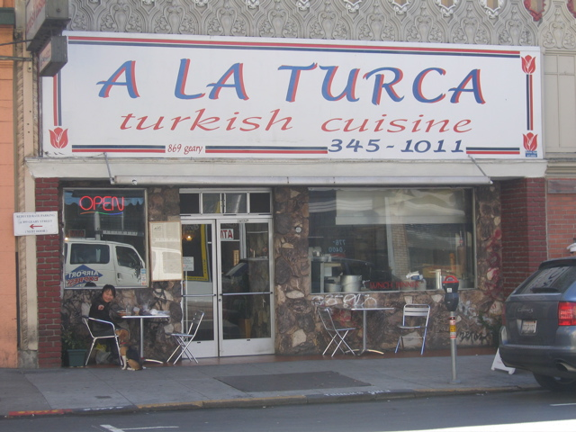

<--Previous Up Next-->

A La Turca
Lunch in the Tenderloin.
We neglected to take a picture of the Leland Tea Company, a very nice little establishment off Polk Street where we had elevenses, and the only visit of the weekend where Huxley was not allowed. Though not ten feet from our window table, he howled his head off the entire time. Maybe that's why we didn't take a picture.